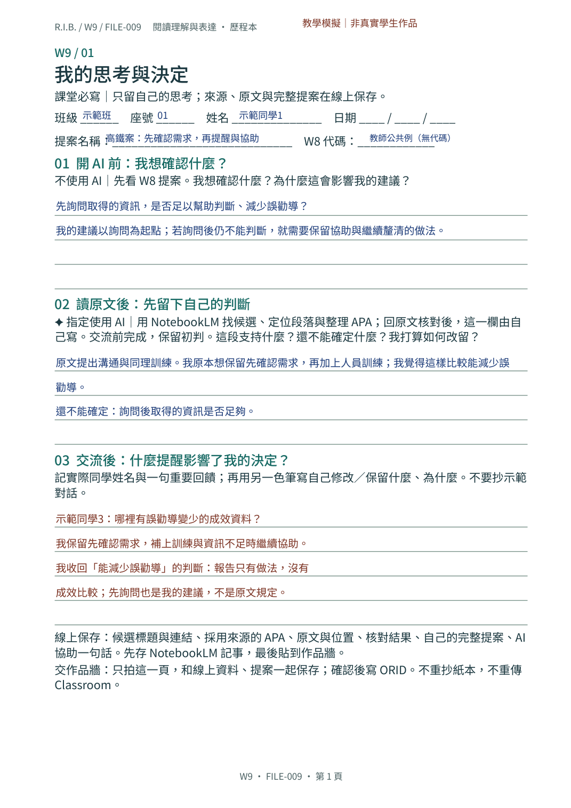
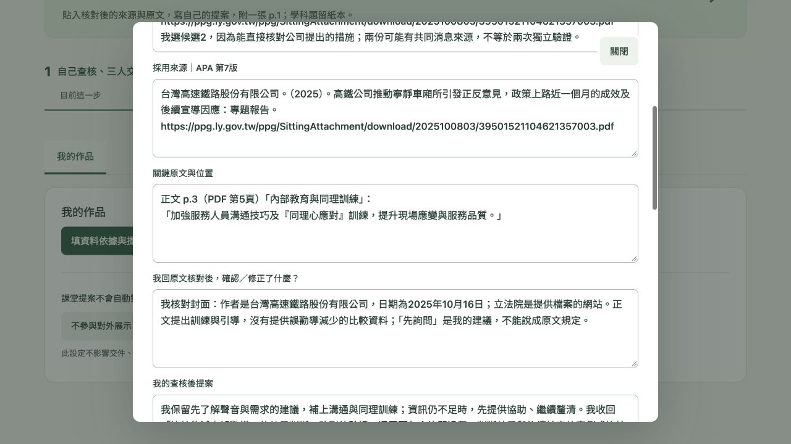
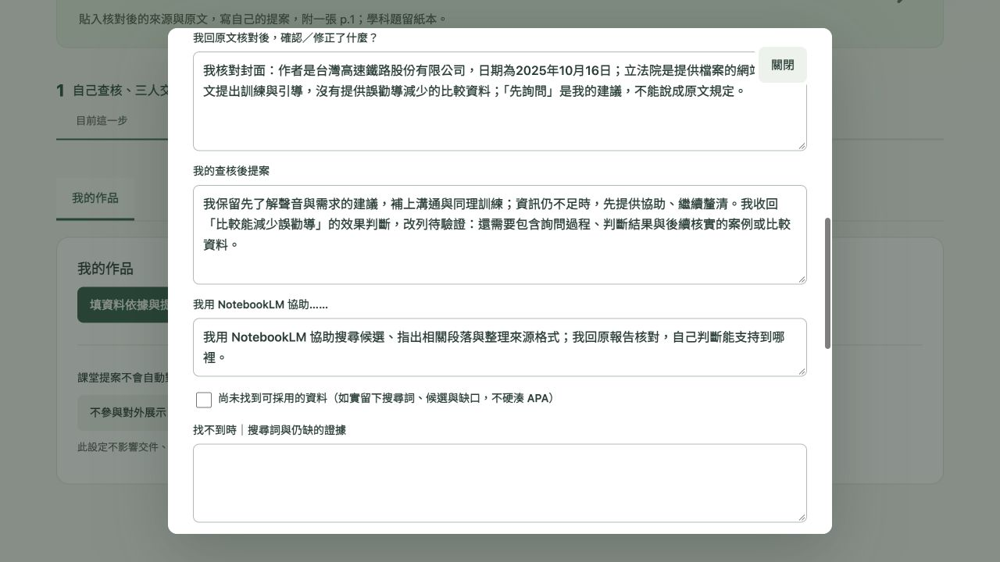
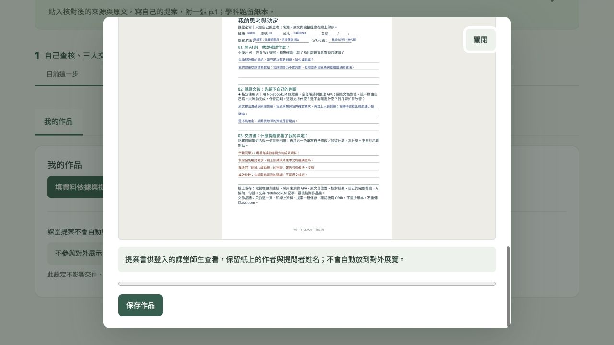
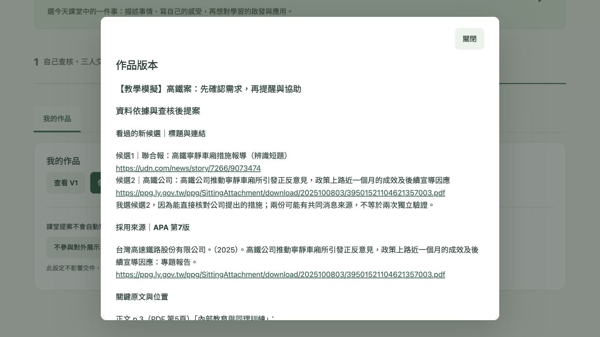
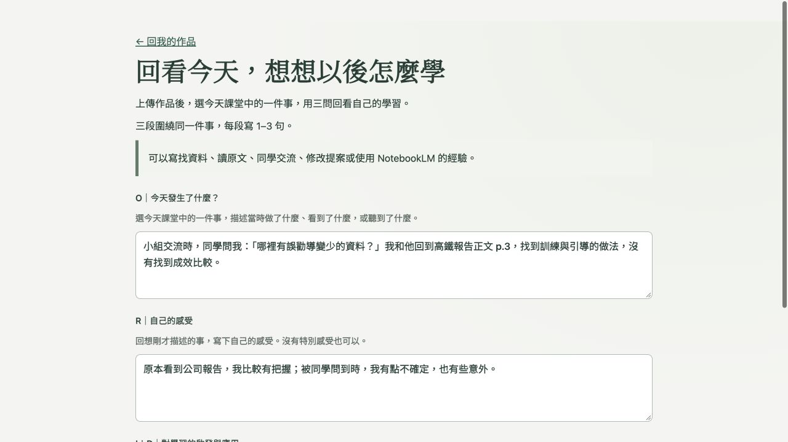
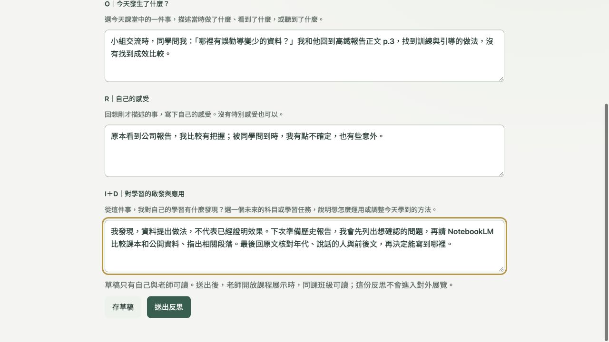
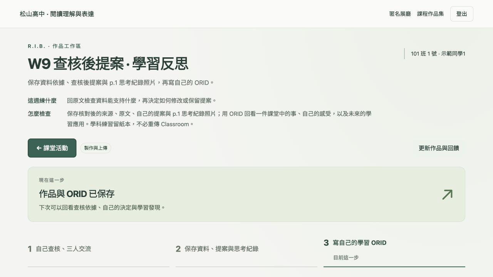

教師編寫的模擬學生歷程；非真實學生作品或對話。資料查核沿用教師實際紀錄。
我建議服務員先確認聲音與需求，再提醒使用耳機，或提供照顧協助。
先詢問取得的資訊，是否足以幫助判斷、減少誤勸導？
我的建議以詢問為起點；若詢問後仍不能判斷，就需要保留協助與繼續釐清的做法。
我原本想保留先確認需求，再加上人員訓練；我覺得這樣比較能減少誤勸導。
「同理心應對」是什麼？是先問旅客為什麼發出聲音嗎？
原文提出訓練和引導，哪裡有實施後誤勸導變少的資料？
先詢問是我提出的做法，原文沒有寫成這個流程；報告也沒有比較誤勸導是否減少。
我保留先了解聲音與需求的建議，補上溝通與同理訓練；資訊仍不足時，先提供協助、繼續釐清。我收回「比較能減少誤勸導」的效果判斷，改列待驗證：還需要包含詢問過程、判斷結果與後續核實的案例或比較資料。
候選1｜聯合報：高鐵寧靜車廂措施報導（辨識短題）
https://udn.com/news/story/7266/9073474
候選2｜高鐵公司：高鐵公司推動寧靜車廂所引發正反意見，政策上路近一個月的成效及後續宣導因應
https://ppg.ly.gov.tw/ppg/SittingAttachment/download/2025100803/39501521104621357003.pdf
我選候選2，因為能直接核對公司提出的措施；兩份可能有共同消息來源，不等於兩次獨立驗證。
台灣高速鐵路股份有限公司。（2025）。高鐵公司推動寧靜車廂所引發正反意見，政策上路近一個月的成效及後續宣導因應：專題報告。https://ppg.ly.gov.tw/ppg/SittingAttachment/download/2025100803/39501521104621357003.pdf
正文 p.3（PDF 第5頁）「內部教育與同理訓練」：
「加強服務人員溝通技巧及『同理心應對』訓練，提升現場應變與服務品質。」
我核對封面：作者是台灣高速鐵路股份有限公司，日期為2025年10月16日；立法院是提供檔案的網站。正文提出訓練與引導，沒有提供誤勸導減少的比較資料；「先詢問」是我的建議，不能說成原文規定。
我用 NotebookLM 協助搜尋候選、指出相關段落與整理來源格式；我回原報告核對，自己判斷能支持到哪裡。
小組交流時，同學問我：「哪裡有誤勸導變少的資料？」我和他回到高鐵報告正文 p.3，找到訓練與引導的做法，沒有找到成效比較。
原本看到公司報告，我比較有把握；被同學問到時，我有點不確定，也有些意外。
我發現，資料提出做法，不代表已經證明效果。下次準備歷史報告，我會先列出想確認的問題，再請 NotebookLM 比較課本和公開資料、指出相關段落。最後回原文核對年代、說話的人與前後文，再決定能寫到哪裡。
只上傳 p.1 一張照片；來源資訊與完整提案在線上保存。打字示範，非真實學生手寫。p.2學科題留紙本。

請為我選用的這份資料整理 APA 第7版參考文獻。先辨認資料類型，再列出作者／機構、日期、完整標題及原始網址。只用來源中可確認的資訊，不要猜；找不到的項目請另外標示。最後提供可複製的參考文獻。請引用原始資料，不要把 NotebookLM 當成這份資料的作者。
以下為獨立本機虛構帳號的實際畫面。正式學生可連結自己的 W8 作品；未連結時保留 W8 紙本。






